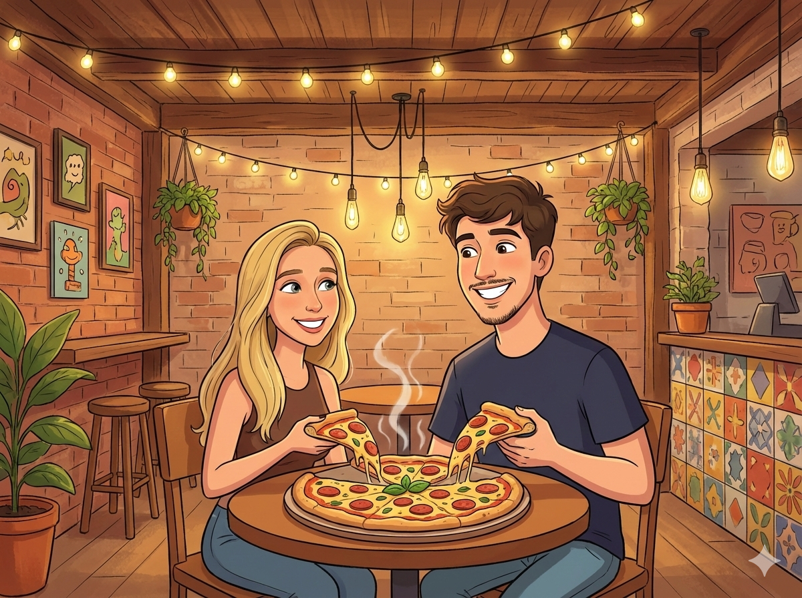

15/07/2025
Nosso primeiro date
O primeiro date foi algo inesquecível. Quando ela saiu do carro, por um segundo eu só consegui imaginar uma modelo descendo, como se aquela cena não fosse real. Eu fiquei em choque com a beleza dela, a ponto de achar, por um instante, que estava sonhando. Durante o jantar, ela me contou sobre ter passado no curso, sobre o quanto estava feliz com aquela conquista, e eu me senti, como sempre, extremamente orgulhoso dela, sendo e sempre sendo o maior fã das suas vitórias. Mas, naquele momento, confesso que eu só conseguia pensar em quão linda aquela mulher era e em como eu era sortudo por ela ter decidido sair comigo. Depois da janta, fomos sentar em um banco e, na minha “sorte”, apareceram ratos. Na hora, eu achei que tinha perdido todas as minhas chances, imaginei ela vendo aquilo e saindo correndo de medo. Mas, para minha surpresa, ela levou tudo na brincadeira, e aquilo me fez feliz por um instante especial: ali eu percebi que ela tinha um senso de humor muito parecido com o meu. E então veio o beijo. O melhor beijo que eu já tive na vida. Naquele momento, eu senti uma felicidade dentro de mim que eu nunca tinha sentido antes. Voltando pra casa, eu voltei todo bobo, feliz, ainda sem acreditar no que tinha acabado de acontecer.
